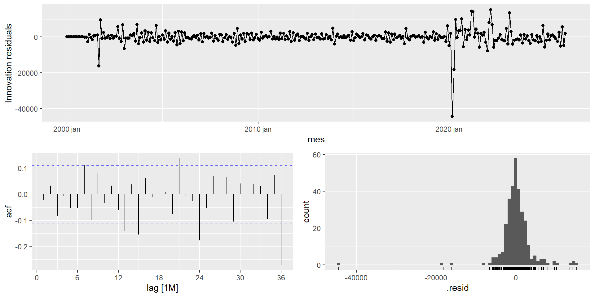

Introdução sobre a Série Temporal utilizada
O transporte aéreo é um importante indicador da atividade econômica global, pois reflete a demanda por viagens e o desempenho do setor de aviação. Neste contexto, a série temporal de “embarques em voos domésticos e internacionais regulares de passageiros de companhias aéreas dos EUA” permite analisar tendências, padrões sazonais e os impactos de mudanças econômicas ao longo do tempo.
Os dados de embarques correspondem ao total de passageiros transportados por companhias aéreas dos Estados Unidos. Os dados internacionais no total do sistema incluem operações de companhias aéreas americanas de e para os EUA e de um ponto estrangeiro para outro. Não estão incluídos voos internacionais ponto a ponto operados por companhias aéreas americanas.
Gráficos para análise de sazonalidade
Gráfico sazonal
A série apresenta sazonalidade clara. Os índices tendem a ser mais baixos no início do ano e aumentam ao longo dos meses, com os picos mais elevados ocorrendo no meio do ano (junho, julho e agosto). Esse padrão se repete ao longo dos anos, evidenciando um comportamento sazonal bem definido.
Gráfico de subseries
A série apresenta sazonalidade clara por mês. Observa-se que alguns meses, como junho, julho e agosto, possuem médias mais elevadas, enquanto meses como janeiro, fevereiro e setembro apresentam índices médios mais baixos. Esse padrão se repete ao longo dos anos, evidenciando um comportamento sazonal consistente entre os meses.
Previsão utilizando o modelo ETS
Estimando os modelos ETS
# A mable: 1 x 5
SES HoltA HoltM HW_Add HW_Mult
<model> <model> <model> <model> <model>
1 <ETS(A,N,N)> <ETS(A,A,N)> <ETS(M,A,N)> <ETS(A,A,A)> <ETS(M,A,M)>
Foi estimado um conjunto de 5 modelos ETS no conjunto de treino. A notação representa respectivamente (erro, tendência, sazonalidade), onde A é aditivo, M é multiplicativo e N é ausente:
ETS(A,N,N) para o SES
ETS(A,A,N) para o Holt Aditivo
ETS(M,A,N) para o Holt Multiplicativo
ETS(A,A,A) para o Holt-Winters Aditivo
ETS(M,A,M) para o Holt-Winters Multiplicativo
Medidas de avaliação
Métricas de avaliação — Modelos ETS
| HW_Mult |
878.0668 |
1913.105 |
1451.226 |
1.0306 |
1.8174 |
NaN |
NaN |
-0.1773 |
| HW_Add |
3985.4902 |
5058.365 |
4522.911 |
4.6332 |
5.4097 |
NaN |
NaN |
0.3732 |
| HoltM |
6227.4518 |
11320.983 |
10026.970 |
6.6971 |
12.1810 |
NaN |
NaN |
0.5751 |
| HoltA |
11857.1860 |
14046.913 |
12245.704 |
13.9028 |
14.4707 |
NaN |
NaN |
0.4750 |
| SES |
13012.6163 |
14823.908 |
13012.616 |
15.3906 |
15.3906 |
NaN |
NaN |
0.4408 |
# A mable: 1 x 1
HW_Mult
<model>
1 <ETS(M,A,M)>
A tabela mostra o erro de cada modelo no período de teste. O modelo com menor MAPE é o Holt-Winters Multiplicativo (HW_Mult), o que faz sentido dado que a série tem sazonalidade e tendência, e a amplitude das variações cresce junto com o nível da série, característica do modelo multiplicativo.
Previsão utilizando modelos SARIMA
Estimando os modelos SARIMA
# A mable: 1 x 7
SARIMA_1 SARIMA_2 SARIMA_3
<model> <model> <model>
1 <ARIMA(1,1,1)(0,1,1)[12]> <ARIMA(2,1,1)(1,1,1)[12]> <ARIMA(0,1,1)(0,1,1)[12]>
SARIMA_4 SARIMA_5 SARIMA_6
<model> <model> <model>
1 <ARIMA(1,1,0)(1,1,0)[12]> <ARIMA(2,1,0)(2,1,0)[12]> <ARIMA(0,1,2)(0,1,2)[12]>
AutoSARIMA
<model>
1 <ARIMA(0,1,0)(2,0,0)[12]>
# A tibble: 7 × 4
.model AIC AICc BIC
<chr> <dbl> <dbl> <dbl>
1 SARIMA_1 5614. 5614. 5629.
2 SARIMA_2 5608. 5608. 5630.
3 SARIMA_3 5613. 5613. 5624.
4 SARIMA_4 5695. 5695. 5706.
5 SARIMA_5 5667. 5667. 5685.
6 SARIMA_6 5614. 5615. 5633.
7 AutoSARIMA 5954. 5954. 5965.
Foram estimados 7 modelos SARIMA no conjunto de treino. Entre as opções avaliadas, o SARIMA_2, correspondente ao ARIMA(2,1,1)(1,1,1)[12], apresentou os menores valores de ajuste do AIC e AICc, indicando o melhor ajuste entre os modelos considerados, que será conferido mais a frente de acordo com as métricas de erro. Os seis primeiros modelos foram definidos manualmente a partir das combinações sugeridas pela ACF e PACF, enquanto o AutoSARIMA realizou a seleção das ordens de forma automática.
Medidas de avaliação
Métricas de avaliação — Modelos SARIMA
| SARIMA_5 |
-143.8405 |
1972.510 |
1639.741 |
-0.3826 |
2.0975 |
NaN |
NaN |
0.2753 |
| SARIMA_4 |
2062.1998 |
2461.449 |
2232.130 |
2.4403 |
2.6673 |
NaN |
NaN |
0.2175 |
| AutoSARIMA |
3545.2778 |
4297.801 |
3579.409 |
4.1466 |
4.1927 |
NaN |
NaN |
0.3662 |
| SARIMA_3 |
3821.1933 |
4778.503 |
4178.204 |
4.4625 |
4.9660 |
NaN |
NaN |
0.4818 |
| SARIMA_1 |
4123.8526 |
5023.770 |
4327.771 |
4.8394 |
5.1263 |
NaN |
NaN |
0.4834 |
| SARIMA_6 |
4178.5774 |
5253.311 |
4568.746 |
4.8799 |
5.4298 |
NaN |
NaN |
0.5290 |
| SARIMA_2 |
6800.0691 |
7203.321 |
6800.069 |
8.2223 |
8.2223 |
NaN |
NaN |
0.2961 |
Series: Indice
Model: ARIMA(2,1,0)(2,1,0)[12]
Coefficients:
ar1 ar2 sar1 sar2
0.3343 -0.0953 -0.6785 -0.3121
s.e. 0.0590 0.0592 0.0567 0.0570
sigma^2 estimated as 17758575: log likelihood=-2942.46
AIC=5886.91 AICc=5886.93 BIC=5890.62

Apesar de o SARIMA_2 ter apresentado o melhor ajuste na fase de treinamento, com o menor AICc (5608), o SARIMA_5, correspondente ao ARIMA(2,1,0)(2,1,0)[12], apresentou o melhor desempenho no período de teste. Com MAPE de 2,10% e RMSE de 1972,51, o modelo apresentou a melhor capacidade de previsão entre os candidatos avaliados. Por isso, o SARIMA_5 foi escolhido para gerar a previsão final de 12 passos.